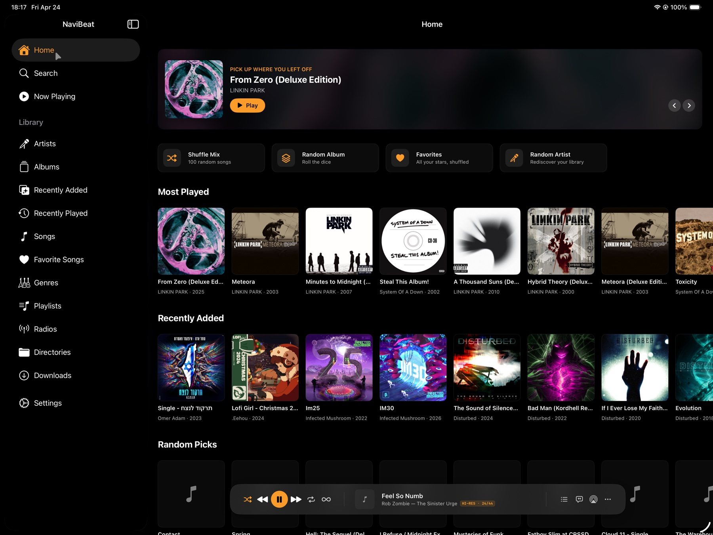

01 / Home
Sidebar on the left, featured album up top, shelves underneath.
Persistent sidebar with Home, Search, Now Playing, and the full Library entries. The main pane opens on Pick Up Where You Left Off with a large cover-art card and a Play button, followed by a Quick Play row — Shuffle Mix, Random Album, Favorites, Random Artist — and shelves for Most Played and Recently Added. The mini player stays docked at the bottom, always in reach.